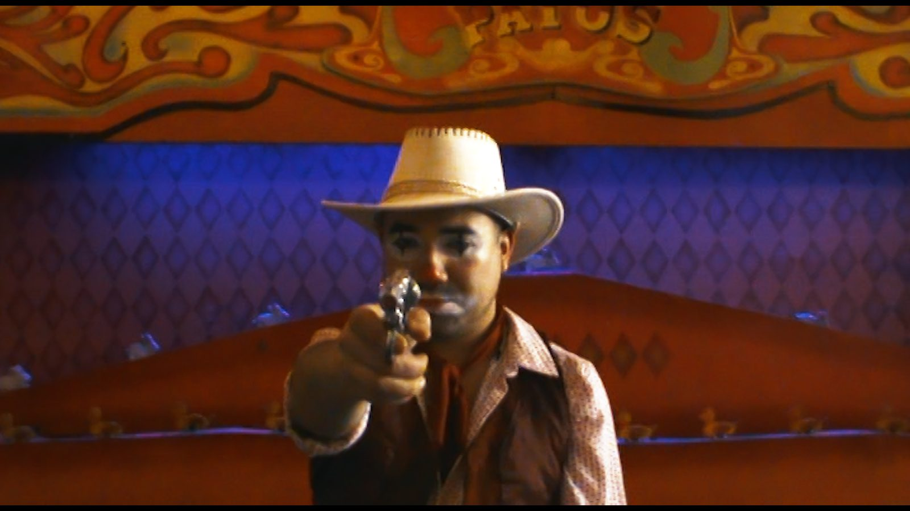
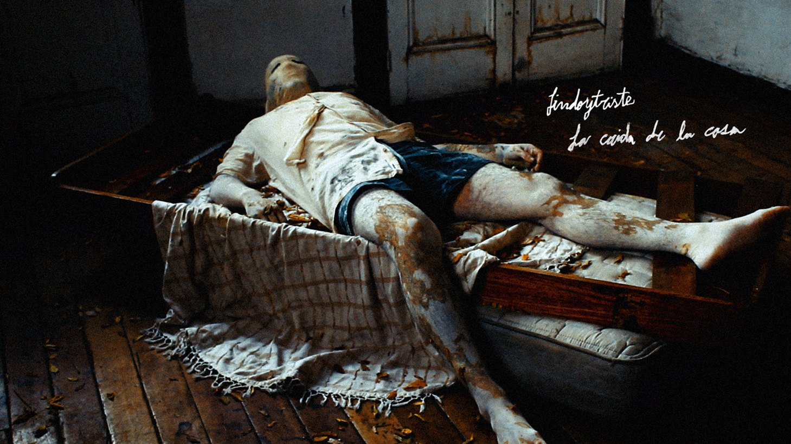
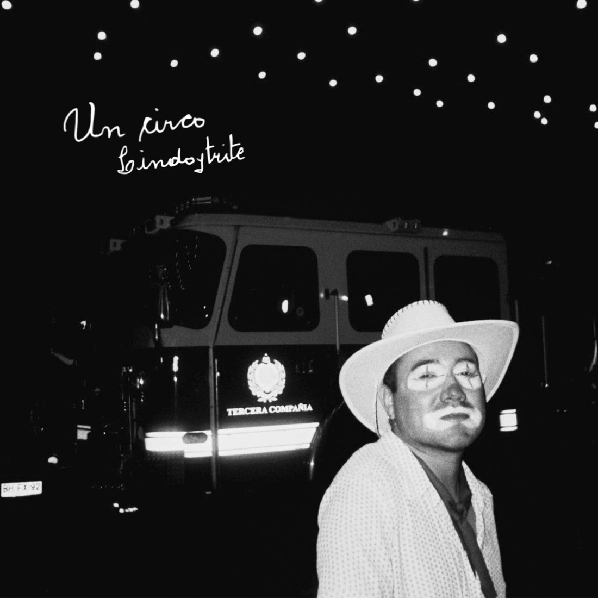
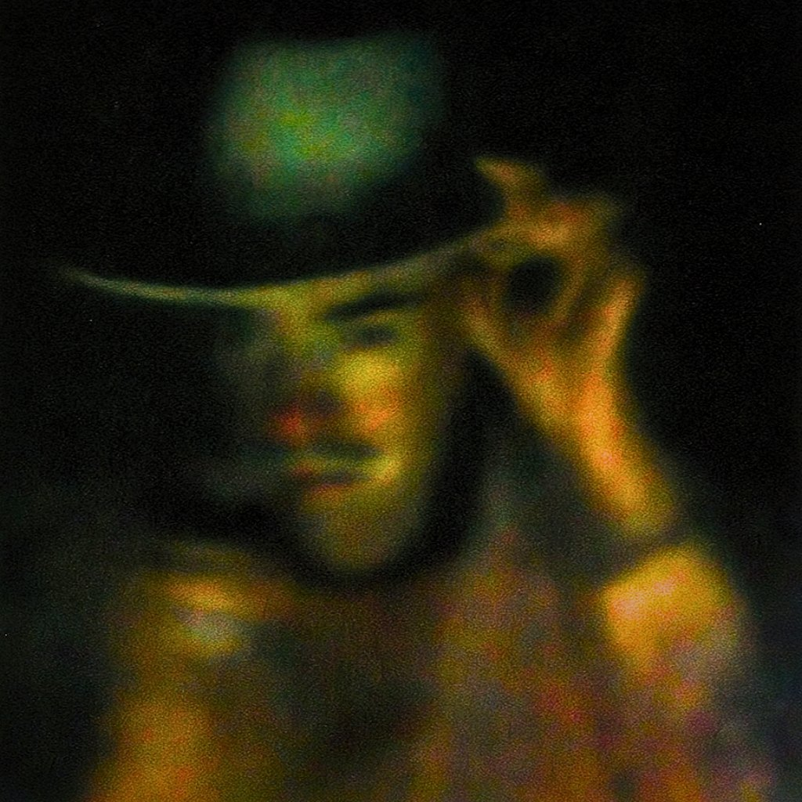

Lindoytriste
Lindoytriste es el proyecto solista de César Carreño Montesinos, músico, compositor y realizador audiovisual chileno. El proyecto comienza su desarrollo en 2023 y realiza su lanzamiento oficial en 2025 con la publicación de La caída de la casa, su primer single.
Su propuesta nace desde la canción romántica y la balada alternativa, explorando emociones como el amor, la pérdida, la distancia, la incomunicación, la soledad y la ilusión. Su sonido combina guitarras, samplers y atmósferas inquietantes con una sensibilidad íntima y narrativa.
Lindoytriste propone un romanticismo visceral a partir de canciones lindas y tristes, buscando transformar experiencias personales en relatos capaces de generar identificación y acompañamiento. Su propuesta incorpora además una perspectiva queer, abordando el amor y los vínculos sin restricciones de género.
2023 a 2026

-
2023
Primeras presentaciones
Antes del lanzamiento oficial, Lindoytriste comenzó a presentar su repertorio en vivo como una instancia de experimentación y desarrollo de la propuesta escénica.
Feria Amo Comer, Casona Compañía, Santiago.
-
2024
Sesiones al Interior
Presentación audiovisual realizada durante 2024 y posteriormente publicada en YouTube.
-
2025
Lanzamiento oficial: La caída de la casa
Primer single y videoclip oficial.
-
2026
Primer EP: Un circo
EP de seis canciones publicado en enero de 2026. Del EP se desprenden los videoclips de Tiro al Blanco y Pirámide.

Single debut, 2025
La caída de la casa
Lindoytriste se presenta oficialmente en 2025 con La caída de la casa, canción inspirada en la pérdida del primer amor.
La obra fue escrita originalmente como un poema a fines de 2017 y posteriormente transformada en canción. Su narrativa utiliza la metáfora del cuerpo como una casa que se derrumba frente a la pérdida.
La producción incorpora lluvia, temblores, objetos cayendo y un reloj que se detiene, construyendo un paisaje sonoro que acompaña el proceso de derrumbe emocional.
El lanzamiento fue acompañado por un videoclip dirigido y postproducido por César Carreño Montesinos, dando inicio a la dimensión audiovisual que caracteriza al proyecto.
Primer EP, enero 2026
Un circo

Tracklist
- Todos los payasos
- Tiro al blanco
- Pirámide
- Quebrazón
- Gatos porfiados
- ¡Vivan los payasos!
Un circo es el primer EP de Lindoytriste y está compuesto por seis canciones.
El trabajo profundiza la exploración de la canción romántica desde la antibalada, tensionando algunas de sus convenciones y combinando intimidad, experimentación y una sensibilidad cercana a la antipoesía.
El EP aborda el fracaso, la persistencia, el dolor y la posibilidad de encontrar una forma de trascendencia en aquello que no resulta como se esperaba.
Escuchar el EP completo Tiro al Blanco, videoclip Pirámide, videoclip

Circulación
Presentaciones en vivo
- 2023 Feria Amo Comer, Casona Compañía, Santiago.
- 2024 Sesiones al Interior, registro audiovisual publicado en YouTube. Ver registro
Prensa
- La Rata Cobertura asociada al proyecto Un circo.
- Mantra Musical Cobertura asociada al proyecto La caída de la casa.
Audiencia
La propuesta busca conectar con públicos vinculados a la canción romántica, la balada, el pop de autor y la música independiente, incorporando también una dimensión queer que forma parte de la identidad artística del proyecto.
La recepción en vivo ha mostrado posibilidades de conexión con públicos de distintas edades, especialmente con personas que mantienen un vínculo con la canción romántica y sus formatos físicos.
Próxima etapa
La última ilusión
Segundo EP proyectado para 2027
La última ilusión corresponde al próximo trabajo discográfico de Lindoytriste y será desarrollado como segundo EP del proyecto durante 2027.
El repertorio estará compuesto por seis canciones:
- Cumbre
- Ven por mí
- Ilusión
- Ser
- Solo quiero despedirme
- Final de temporada
El EP explora un amor imposible marcado por la distancia, la incomunicación, la ilusión y la ternura.
En términos musicales, el nuevo trabajo avanza hacia canciones más melódicas, directas y accesibles, explorando nuevas posibilidades para la canción romántica sin abandonar la sensibilidad narrativa, la experimentación y la identidad construidas durante las primeras etapas del proyecto.
El proyecto busca consolidarse como un exponente destacado de la canción romántica contemporánea en Chile, ampliando progresivamente su circulación hacia Latinoamérica y otros circuitos internacionales.
La estrategia de lanzamiento contempla singles, producción audiovisual, difusión nacional e internacional, distribución física y digital y un concierto de lanzamiento.